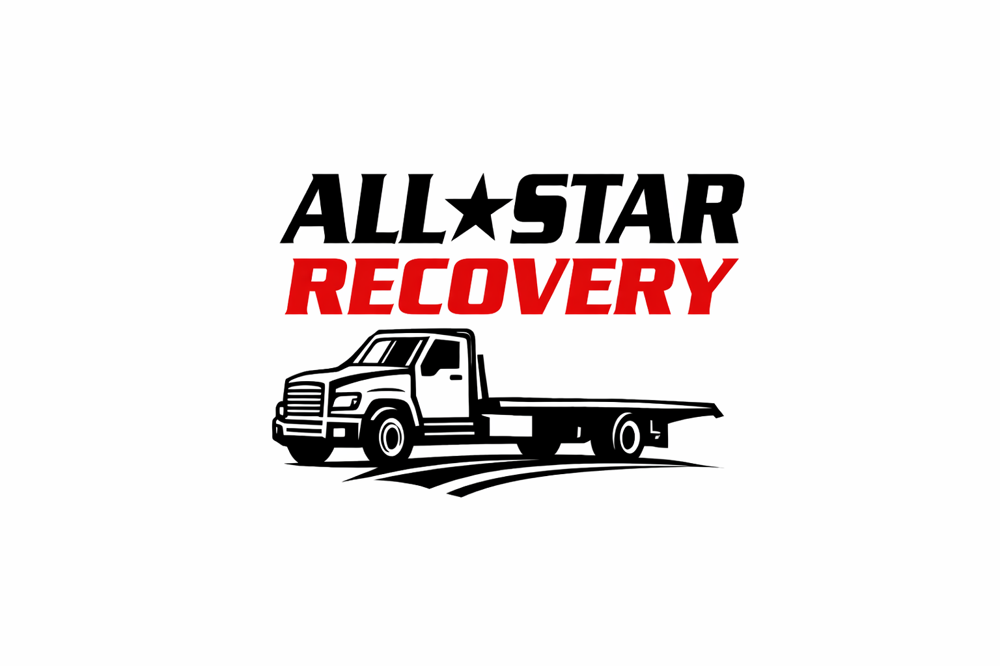
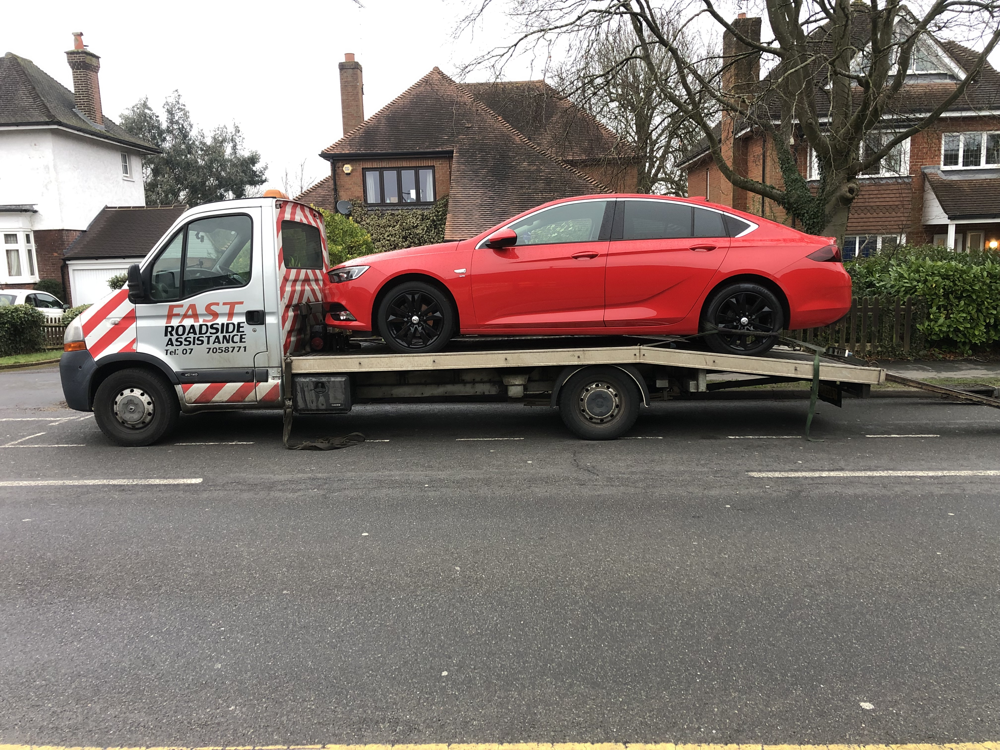

24/7 Emergency Towing & Breakdown Recovery
Slough • West London • Berkshire
⚡ Fast response ⚡
usually with you in 30–60 minutes
⭐ 5-Star Rated Service | 🛡️ Fully Insured | 📍 Local & Reliable
📞 Call 07591 063104
All Star Recovery provides 24/7 emergency towing in Slough, breakdown recovery across West London, and fast roadside assistance throughout Berkshire. We operate around the clock to get you back on the road quickly and safely.
📞 Call now for fast, reliable recovery you can trust
Slough
Windsor
Maidenhead
Langley
Burnham
Iver
Datchet
Staines
Uxbridge
Hayes
Hillingdon
Southall
Heathrow
West London
Call us now for fast roadside recovery in Slough and West London.
📞 Call Now